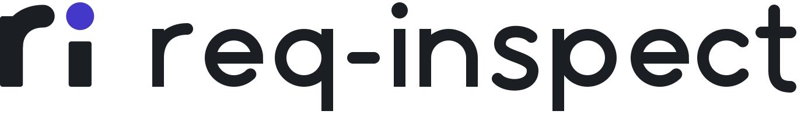
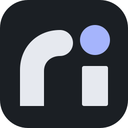
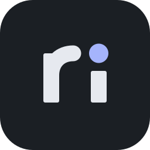

The r passes over to the i, and its dot is the live signal: the one point of color, like the connection dot in the dashboard.


req-inspectA drop-in request inspector for Express: mount one middleware and browse every request and response, live, in a local dashboard.
